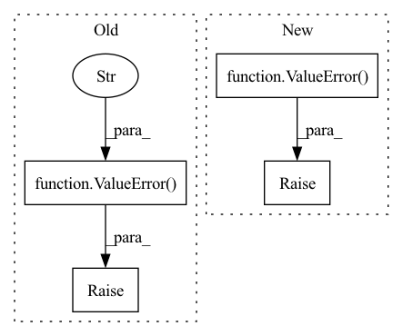

Pattern ID :3505
Before Change
return loss(vals,target)
else:
raise ValueError("method must be variance, energy or callable" )
return loss
class OrthoReg(nn.Module):After Change
loss = self.wf.energy(pos)
else:
raise ValueError( "method must be variance, energy")
return loss
class OrthoReg(nn.Module):In pattern: SUPERPATTERN
Frequency: 3
Non-data size: 4
Instances Fragment ID: 17588844
Project Name: nlesc-jcer/qmctorch
Commit Name: 3f224d17a7a179f040a17490a73723d1388f2e09
Time: 2019-08-16
Author: nicolas.gm.renaud@gmail.com
File Name: deepqmc/solver/torch_utils.py
M Class Name: Loss
N Class Name: Loss
M Method Name: forward(2)
N Method Name: forward(3)
M Parent Class: nn.Module
N Parent Class: nn.Module
M File Name: deepqmc/solver/torch_utils.py
N File Name: deepqmc/solver/torch_utils.py
M Start Line: 25
M End Line: 42
N Start Line: 34
N End Line: 34
Before Change
.format(self.pos_dim, pos.shape[-1])
)
if view_dir.shape[-1] != self.view_dir_dim:
raise ValueError(
"Expected {}-D view direction vector. Got {}."
.format(self.view_dir_dim, view_dir.shape[-1])
)
x = self.relu_actvn(self.fc_in(pos))
x = self.relu_actvn(self.fc_1(x))
x = self.relu_actvn(self.fc_2(x))After Change
// check input tensors
if (pos.ndim != 2) or (view_dir.ndim != 2):
raise ValueError(f"Expected 2D tensors. Got {pos.ndim}, {view_dir.ndim}-D tensors." )
if pos.shape[0] != view_dir.shape[0]:
raise ValueError(
f"The number of samples must match. Got {pos.shape[0]} and {view_dir.shape[0]}."
) Fragment ID: 17588846
Project Name: dvelopery0115/torch-nerf
Commit Name: 0b877b31ee0fa01d5409542c7eb7b3321b200e26
Time: 2022-06-15
Author: dreamy1534@kaist.ac.kr
File Name: src/network/nerf_mlp.py
M Class Name: NeRFMLP
N Class Name: NeRFMLP
M Method Name: forward(3)
N Method Name: forward(3)
M Parent Class: nn.Module
N Parent Class: nn.Module
M File Name: src/network/nerf_mlp.py
N File Name: src/network/nerf_mlp.py
M Start Line: 62
M End Line: 80
N Start Line: 59
N End Line: 69
Before Change
"be provided"
)
if(use_memory_efficient_kernel and use_lma):
raise ValueError(
"Choose one of use_memory_efficient_kernel and use_lma"
)
// [*, H, Q/K, C_hidden]
q, k, v = self._prep_qkv(q_x, kv_x)
After Change
)
if(use_flash and biases is not None):
raise ValueError(
"use_flash is incompatible with the bias option. For masking, "
"use flash_mask instead"
)
attn_options = [use_memory_efficient_kernel, use_lma, use_flash]
if(sum(attn_options) > 1):
raise ValueError( Fragment ID: 17588833
Project Name: aqlaboratory/openfold
Commit Name: 4f53624d92b28c56c5479c20f262f63b4eaeec68
Time: 2022-07-08
Author: gahdritz@gmail.com
File Name: openfold/model/primitives.py
M Class Name: Attention
N Class Name: Attention
M Method Name: forward(10)
N Method Name: forward(8)
M Parent Class: nn.Module
N Parent Class: nn.Module
M File Name: openfold/model/primitives.py
N File Name: openfold/model/primitives.py
M Start Line: 439
M End Line: 469
N Start Line: 415
N End Line: 486